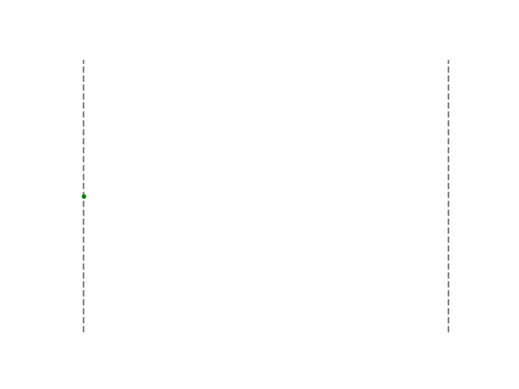
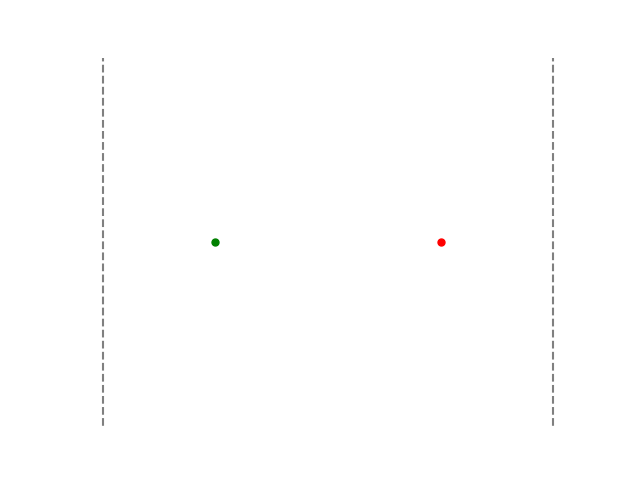
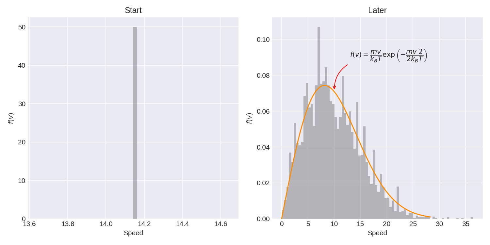

Maxwell-Boltzmann
1 Introduction
1.1 What is the problem about
This problem involves a basic molecular dynamics simulation in which particles (modelled as hard spheres) collide with each other and rebound off the walls of a container. The concept is that, given enough particles and sufficient time, the speed distribution of the system will stabilize to the Maxwell-Boltzmann distribution.
1.2 Learning Objectives
This is not a difficult problem, but it is not straightforward either. Developing this simulation from scratch to an optimised version (utilising Numpy) that can handle about 1000 particles will be quite an achievement.
This problem presents a great opportunity to learn several important aspects:
- Comparing code written with pure functions to that using classes.
- Comparing the use of classes with the use of Numpy.
- Learning to optimise your code using Numpy.
- Visualising your simulation with animations.
2 Tasks
2.1 1D Bouncing Particle

Without using classes, create a simple 1D numerical simulation of a ball of radius \(r=.01\) bouncing back and forth in a box with walls as \(x=0\) and \(x=10\).
Here is how I recommend you do it:
Vary the time in steps of \(dt=0.1\)
Change the position of the ball using: \[ x= x_0+v_xt \tag{1}\]
Check if the ball has collided with the walls
Keep track of the position with time.
Plot the results after you are done.
To help you get started, I have provided some start codes below:
max_time = 100
dt = 0.1
mass, radius = 1, .1
all_time = []
all_x = []
vx = 0.5
x = 0
time = 0
left_wall = 0
right_wall = 10
while True:
all_x.append()
all_time.append(time)
time += ???
x += ???
# Hallo wall?
test_left_wall = x < left_wall + radius
test_right_wall = ???
if test_left_wall or test_right_wall:
???
# Time to stop?
if time > max_time:
breakplt.plot(all_time, all_x)
plt.hlines(left_wall, 0, max_time, 'gray', 'dashed')
plt.hlines(right_wall, 0, max_time, 'gray', 'dashed')
plt.xlabel('time')2.2 Getting Classy
Given below is a version of the above code written using a Python class I created called CParticle.
class CParticle:
x, vx = 0, 0
radius = .1
mass = 1
left_wall = 0
right_wall = 10
def __init__(self, initial_x, speed) -> None:
self.x = ???
self.vx = ???
self.x_history = [self.x]
def step_in_time(self, dt):
self.x += ???
self.x_history.append(???)
# Hallo wall?
test_right = self.x >= right_wall-self.radius
test_left = ???
if test_left or test_right:
???
dt = 1E-0
max_time = 100
all_time = []
particle = CParticle(initial_x=5, speed=1)
time = 0
while True:
all_time.append(time)
particle.step_in_time(dt)
time += dt
# Time to stop?
if time > max_time:
breakplt.plot(all_time, particle.x_history)
plt.hlines(left_wall, 0, max_time, 'gray', 'dashed')
plt.hlines(right_wall, 0, max_time, 'gray', 'dashed')
plt.xlabel('time')Get this code to work.
2.3 Animations
I don’t want to spend too much time describing how to make animations. However, it does make the whole process a lot of fun to do it. So, here is the code I used to generate the animation.
import matplotlib.animation as animationfig, ax = plt.subplots()
ax.vlines(left_wall, -1, 1, 'gray', 'dashed')
ax.vlines(right_wall, -1, 1, 'gray', 'dashed')
ax.axis('off')
all_x = particle.x_history
all_y = [0]*len(all_x)
# Create the plot and store as a variable to reuse later
balls, = ax.plot(all_x[0], all_y[0], marker='.', color='g')
def update(frame_number):
x = all_x[frame_number]
y = all_y[frame_number]
# update the plot data
balls.set_data(x, y)
return balls
# FuncAnimation calls update() and stores the plots to create the animation
ani = animation.FuncAnimation(
fig=fig, func=update, frames=len(x), interval=50, blit=False)
ani.save('animation_drawing_1-particle.gif')2.4 Two Particles
Modify the previous code (that uses classes) to accommodate two non-interacting particles.
2.5 Adding Collisions
Upgrade your previous code (that uses classes) to accommodate collisions between the particles.

2.6 Adding a dimension
- Upgrade
CParticleto accommodate the secondydimension. - You might also want to start using Numpy arrays.
- Ignore particle collisions for the moment.
- Plot your data (animate if you dare).
2.7 More Particles
- Upgrade your simulation to handle 10 particles in 2D.
- Continue to ignore particle collisions.
- Plot your data (again, animate if you dare).
2.8 Time for Collisions
You can decide if two particles have collided by checking if the distance between their centres is smaller that \(2r\). However, now you have to check who collides with whom.
- Get help from Numpy functions
pdist()andsquareform()to decide on the pairs of collisons. - Please refer to this resource to get the formulae that describe the dynamics of particle collisions.
- Incorporate collisions into your simulation.
2.9 Need for Speed
Now look at the strategies discussed in All About Efficiency to see how to improve your code for speed.
2.10 Time to abandon classes
When I played with this simulation I soon realised that I needed to switch to a full Numpy implementation (that does not use CParticle) to do vectorise operations. So, now you need to rethink your whole simulation and start using Numpy.
Note that this is a difficult thing to do. But, you wanted to learn how to write efficient code; so…
2.11 A 1000 particles
- Once you have finished your tweaks, run the simulation for 1000 particles and plot the histogram of speeds. This is what I got:

I have also overlayed the theoretical distribution of speeds for 2D over our results.
\[ f(v) = \dfrac{m v}{k_B T}\;\exp\left(-\dfrac{mv^2}{2k_B T}\right) \]